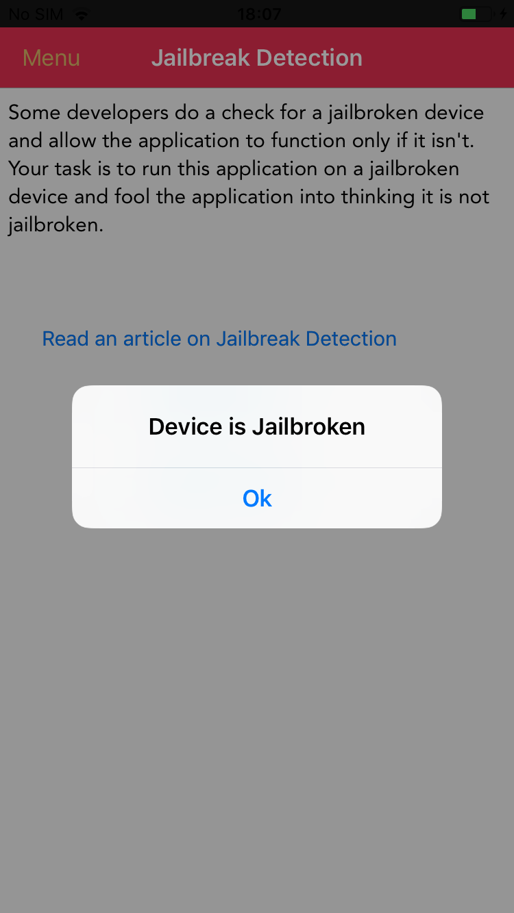
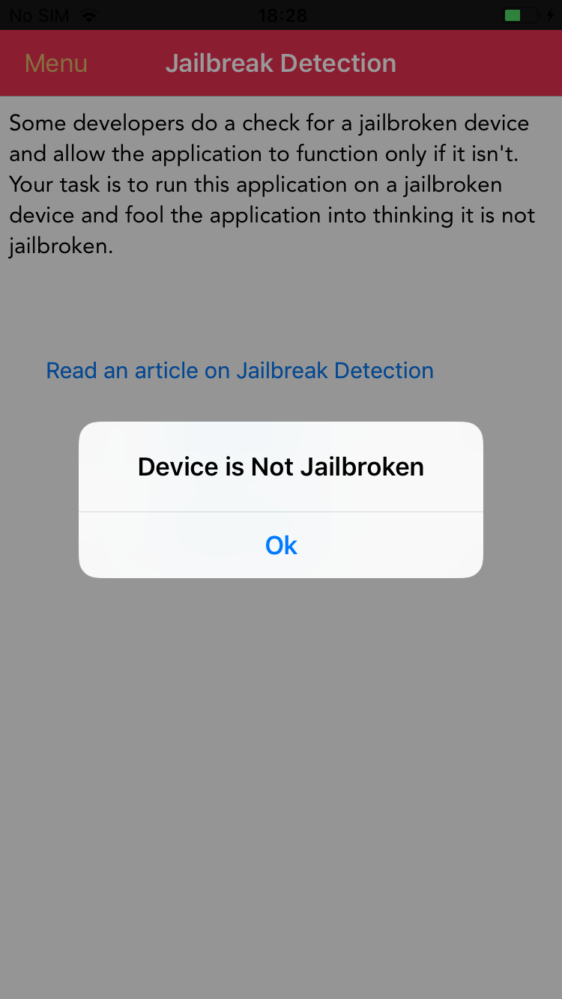

Simple Jailbreak Bypass
Mobile applications will often detect if the mobile divice is in an untrusted state, for iOS this is detecting if the device is jailbroken. As attackers this is rather annoying, however, it it normally possible to bypass this.
Detection
Mobile applications can detect if a device is untrusted in a few different ways. One of the ways I like to find this out before I launch the application is to discover any common strings within the application that relate to this type of detection.
In this example I'll use jailrootdetector.
jrd --ios ~/Downloads/DamnVulnerableiOSApp/Payload/DamnVulnerableIOSApp.app/DamnVulnerableIOSApp
[+] searching [+] detection strings found: /usr/bin/sshd 0x83305 29 28 /Applications/SBSettings.app /private/var/tmp/cydia.log 0x833f4 50 49 /System/Library/LaunchDaemons/com.ikey.bbot.plist /bin/bash 0x8333b 32 31 /Applications/IntelliScreen.app 0x8335b 55 54 /Library/MobileSubstrate/DynamicLibraries/Veency.plist /etc/apt 0x832b1 15 14 /usr/sbin/sshd /usr/libexec/sftp-server 0x8347e 23 22 /private/var/lib/cydia /Library/MobileSubstrate/DynamicLibraries/LiveClock.plist /Applications/RockApp.app 0x832e7 30 29 /Applications/WinterBoard.app 0x85868 47 46 /Library/MobileSubstrate/MobileSubstrate.dylib 0x833e1 19 18 /private/var/stash /Applications/Cydia.app /Applications/WinterBoard.app /Library/MobileSubstrate/DynamicLibraries/Veency.plist /Applications/SBSettings.app 0x85953 21 20 Device is Jailbroken 0x85968 25 24 Device is Not Jailbroken 0x8e331 22 21 isTheDeviceJailbroken 0x8e513 13 12 isJailbroken 0x91e12 39 38 showAlertForJailbreakTestIsJailbroken: 0x83322 25 24 /Applications/MxTube.app /Applications/Icy.app /Library/MobileSubstrate/MobileSubstrate.dylib 0x83269 24 23 /Applications/Cydia.app /private/var/stash 0x83463 27 26 /private/var/tmp/cydia.log 0x8329b 22 21 /Applications/Icy.app /usr/sbin/sshd 0x85897 10 9 /bin/bash 0x83281 26 25 /Applications/RockApp.app 0x833cc 21 20 /private/var/lib/apt /System/Library/LaunchDaemons/com.saurik.Cydia.Startup.plist 0x832c0 14 13 /usr/sbin/sshd 0x832ce 25 24 /usr/libexec/sftp-server /private/var/lib/apt /System/Library/LaunchDaemons/com.ikey.bbot.plist 0x858a1 9 8 /etc/apt /Applications/MxTube.app /private/var/lib/cydia 0x83426 61 60 /System/Library/LaunchDaemons/com.saurik.Cydia.Startup.plist 0x83392 58 57 /Library/MobileSubstrate/DynamicLibraries/LiveClock.plist /Applications/IntelliScreen.app
From that output we can see that the application attempts to detect the following;
- /bin/bash
- /etc/apt
- /usr/bin/sshd
- /usr/sbin/sshd
- /usr/libexec/sftp-server
- /private/var/stash
- /private/var/lib/apt
- /private/var/lib/cydia
- /private/var/tmp/cydia.log
- /Applications/Icy.app
- /Applications/Cydia.app
- /Applications/MxTube.app
- /Applications/RockApp.app
- /Applications/SBSettings.app
- /Applications/IntelliScreen.app
- /Applications/WinterBoard.app
- /System/Library/LaunchDaemons/com.ikey.bbot.plist
- /System/Library/LaunchDaemons/com.saurik.Cydia.Startup.plist
- /Library/MobileSubstrate/MobileSubstrate.dylib
- /Library/MobileSubstrate/DynamicLibraries/Veency.plist
- /Library/MobileSubstrate/DynamicLibraries/LiveClock.plist
Running the application and triggering the jailbreak check functionality, and it does detect that its running on a jailbroken device.

Bypass
There are a few ways to bypass this detection, could use something like Liberty Lite where this application is installed on a jailbroken device. To have more fun, I'm going to leverage a frida script.
First I'll make a list of all those detected strings from the previous step.
var paths = [ "/bin/bash", "/etc/apt", "/usr/bin/sshd", "/usr/sbin/sshd", "/usr/libexec/sftp-server", "/private/var/stash", "/private/var/lib/apt", "/private/var/lib/cydia", "/private/var/tmp/cydia.log", "/Applications/Icy.app", "/Applications/Cydia.app", "/Applications/MxTube.app", "/Applications/RockApp.app", "/Applications/SBSettings.app", "/Applications/IntelliScreen.app", "/Applications/WinterBoard.app", "/System/Library/LaunchDaemons/com.ikey.bbot.plist", "/System/Library/LaunchDaemons/com.saurik.Cydia.Startup.plist", "/Library/MobileSubstrate/MobileSubstrate.dylib", "/Library/MobileSubstrate/DynamicLibraries/Veency.plist", "/Library/MobileSubstrate/DynamicLibraries/LiveClock.plist", ];
Then, I want to catch or move exectuion to the next instruction if the application detects if the path is present, or if it can execute the file at that path. My JavaScript is questionable, but I luckily found this script on frida code share that does what I want in the following code;
resolver.enumerateMatches('*[* *jail**]', { onMatch: function(match) { var ptr = match["address"]; Interceptor.attach(ptr, { onEnter: function() {}, onLeave: function(retval) { retval.replace(0x0); } }); }, onComplete: function() {} }); resolver.enumerateMatches('*[* fileExistsAtPath*]', { onMatch: function(match) { var ptr = match["address"]; Interceptor.attach(ptr, { onEnter: function(args) { var path = ObjC.Object(args[2]).toString(); this.jailbreakCall = false; for (var i = 0; i < paths.length; i++) { if (paths[i] == path) { this.jailbreakCall = true; } } }, onLeave: function(retval) { if (this.jailbreakCall) { retval.replace(0x0); } } }); }, onComplete: function() {} }); resolver.enumerateMatches('*[* canOpenURL*]', { onMatch: function(match) { var ptr = match["address"]; Interceptor.attach(ptr, { onEnter: function(args) { var url = ObjC.Object(args[2]).toString(); this.jailbreakCall = false; if (url.indexOf("cydia") >= 0) { this.jailbreakCall = true; } }, onLeave: function(retval) { if (this.jailbreakCall) { retval.replace(0x0); } } }); }, onComplete: function() {} });
I could run this directly from firda codeshare with the --codeshare rodnt/ios-jailbreak-bypass option, but I want to review it, and I need to make any changes, I have it locally.
Hooking with Frida
All that I need to do now is hook the application with frida, and include the bypass script.
frida -U -l ./jailbreakbypass.js -f "com.highaltitudehacks.dvia" --no-pause
That command will spawn the application, and load in the JavaScript file that hopfully bypasses the detection. All thats left is to check if its worked.
